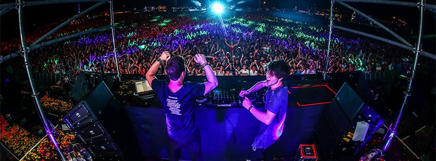
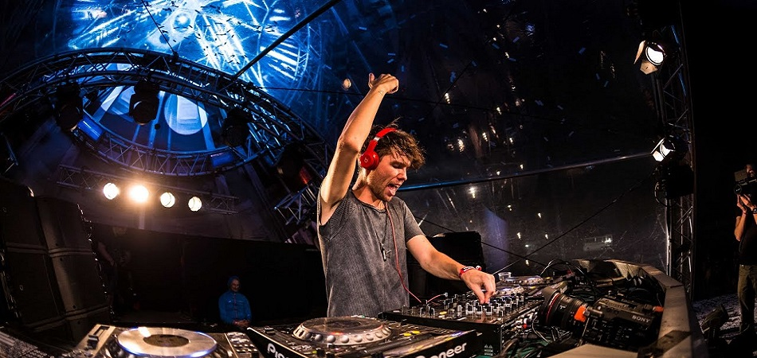
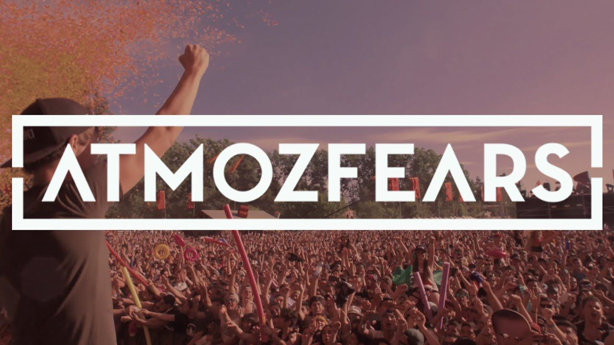

Atmozfears

Atmozfears es un artista de hardstyle holandés llamado Tim van de Stadt . Atmozfears fue primero un trío. A fines de 2012, Michael Jessen dejó el trío. El 1 de julio de 2013, Kevin Keizer también siguió su propio camino. En febrero de 2012 Atmozfears se unió a la etiqueta Scantraxx . Atmozfears ha jugado en los festivales Defqon.1 , The Qontinent , Q-Base y Tomorrowland .
El 1 de julio de 2013, Scantraxx anunció que Tim y Kevin se separaron como buenos amigos. Tim continuará Atmozfears, Kevin también se mantendrá activo en la música, bajo el nombre InfRno.
En el 2012, innumerables artistas le dieron su apoyo mezclando su música desde que la disquera Scantraxx firmó su primer tema. Headhunterz, uno de los máximos exponentes de este género, también incluye en sus sets la música de Tim junto a otros DJs del medio. En los últimos 12 meses Atmozfears estuvo presente en una infinidad de festivales en los que destaca Defqon.1 Festival, Intents Festival y Knock Out, los cuales han sido conquistados por Tim, pero algo que nunca olvidaremos fue su aparición en el Amsterdam Ziggo Dome y Heineken Music Hall.
Haz click aqui para escuchar sus canciones Bv

Aqui tocaremos unos puntos importantes sobre la carrera del artista
- Top Canciones
- Genero y albumes
- Logotipo
- Glosario
- Enlaces
Top Canciones
- Release
- Reaweakening
- You and me
- Accelerate
- Leave it behind
- Genero y albumes
Hardstyle es un subgénero de la música electrónica con influencias del Hard house, acid house, hard trance y hardcore. El Hardstyle normalmente consiste en un profundo y fuerte sonido de bombos, intensas líneas de bajo descontroladas o invertidas que acompañan el ritmo, un sintetizador tocando una melodía, y sonidos tanto distorsionados como melódicos. Los artistas de la corriente Hardcore sentaron las bases del Hardstyle.
- Logotipo

- Glosario
-
Hardstyle: Hardstyle es un subgénero de la música electrónica con influencias del Hard house, acid house, hard trance y hardcore
Scantraxx: Scantraxx es una Compañía Discográfica Holandesa fundada en el 2002 por Dov Elkabas. Scantraxx se especializa en Música Electrónica del género Hardstyle
Tomorrowland, Q-Base, Defqon 1, etc : Son festivales de música electrónica de baile celebrado anualmente Los festivales son organizados por IDT y Entertainment and Media Enterprise.
- Enlaces
Haz click aqui para entrar a su canal
Haz click aqui donde argumenta que es el hardstyle
Haz click aqui para encontrar mas informacion sobre el artista